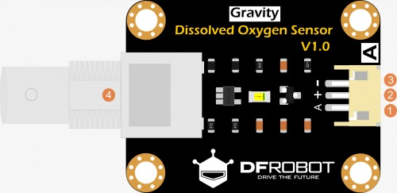
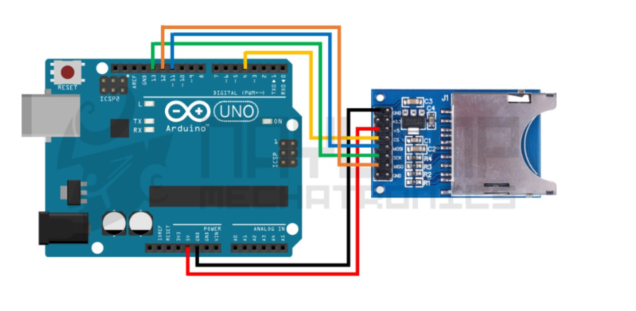
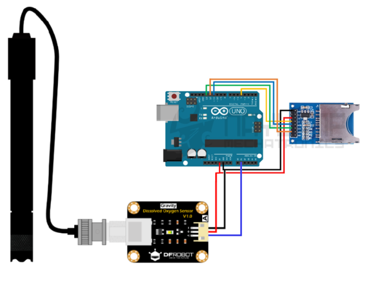

Circuito
Acontinuación se presenta el diseño del circuito y diagramas eléctricos para desarrollar el sensor.
Modulo del sensor
Es el encargado de convertir las señales

ESPECIFICACIONES DEL MÓDULO
| No | Etiqueta | Descripción |
|---|---|---|
| 1 | A | Salida de señal analógica |
| 2 | + | Vcc |
| 3 | - | GND |
| 4 | BCN | Conector cable sonda |
CÓDIGO DE CALIBRACIÓN
#include <Arduino.h>
#define VREF 5000 //VREF(mv)
#define ADC_RES 1024 //ADC Resolution
uint32_t raw;
void setup()
{
Serial.begin(115200);
}
void loop()
{
raw=analogRead(A1);
Serial.println("raw:\t"+String(raw)+"\tVoltage(mv)"+String(raw*VREF/ADC_RES));
delay(1000);
}
Conexion modulo arduino con SD
Para conectar el módulo de oxígeno disuelto al Arduino, se deben seguir los siguientes pasos:
1. Conectar el pin de salida analógica (A) del módulo al pin A1 del Arduino.
2. Conectar el pin de alimentación positiva (+) del módulo al pin de 5V del Arduino.
3. Conectar el pin de tierra (-) del módulo al pin GND del Arduino.
4. Asegurarse de que la sonda esté correctamente conectada al conector BCN del módulo.
Una vez realizadas estas conexiones, el Arduino podrá leer los valores analógicos proporcionados por el sensor de oxígeno disuelto y procesarlos según sea necesario para su aplicación específica.

CONEXIONES MÓDULO SD
| Módulo SD | Arduino Uno / Nano |
|---|---|
| CS | 4 |
| SCK | 13 |
| MOSI | 11 |
| MISO | 12 |
| VCC | 5 V |
| GND | GND |
CÓDIGO DEL ARDUINO
#include <SPI.h>
#include <SD.h>
#include <TimeLib.h> // Librería para el reloj interno por software
#define DO_PIN A0
#define VREF 5000
#define ADC_RES 1024
#define CHIP_SELECT 4
// --- AJUSTA ESTOS VALORES ANTES DE SUBIR EL CÓDIGO ---
int hora = 8;
int minuto = 10;
int segundo = 0;
int dia = 5;
int mes = 3;
int anio = 2026;
const uint16_t DO_Table[41] = {
14460, 14220, 13820, 13440, 13090, 12740, 12420, 12110, 11810, 11530,
11260, 11010, 10770, 10530, 10300, 10080, 9860, 9660, 9460, 9270,
9080, 8900, 8730, 8570, 8410, 8250, 8110, 7960, 7820, 7690,
7560, 7430, 7300, 7180, 7070, 6950, 6840, 6730, 6630, 6530, 6410
};
uint16_t cal1_V = 1600;
uint8_t cal1_T = 25;
uint8_t tempActual = 25;
bool sdDisponible = false;
void setup() {
Serial.begin(115200);
delay(1000);
setTime(hora, minuto, segundo, dia, mes, anio); // Inicializa reloj interno
Serial.print(F("Iniciando SD..."));
if (SD.begin(CHIP_SELECT)) {
sdDisponible = true;
Serial.println(F(" LISTA."));
File dataFile = SD.open("LOG_OD.csv", FILE_WRITE);
if (dataFile) {
dataFile.println(F("Fecha,Hora,Temp(C),Voltaje(mV),Oxigeno(mg/L)"));
dataFile.close();
}
} else {
Serial.println(F(" FALLO SD."));
}
Serial.println(F("--- CONTROL ---"));
Serial.println(F("- Escribe CAL para calibrar al aire"));
}
void loop() {
uint16_t adcRaw = analogRead(DO_PIN);
uint32_t voltage_mv = (uint32_t)VREF * adcRaw / ADC_RES;
if (Serial.available() > 0) {
String input = Serial.readString();
input.trim();
input.toUpperCase();
if (input == "CAL") {
cal1_V = (uint16_t)voltage_mv;
Serial.print(F(">> CALIBRADO A: ")); Serial.print(cal1_V); Serial.println(F(" mV"));
} else if (input.startsWith("T")) {
int nuevaTemp = input.substring(1).toInt();
if (nuevaTemp >= 0 && nuevaTemp <= 40) {
tempActual = (uint8_t)nuevaTemp;
Serial.print(F(">> TEMP AJUSTADA: ")); Serial.println(tempActual);
}
}
}
uint16_t V_saturation = (uint32_t)cal1_V + 35 * tempActual - 35 * cal1_T;
uint16_t tableValue = DO_Table[tempActual];
uint32_t do_raw = voltage_mv * tableValue / V_saturation;
float do_mgL = do_raw / 1000.0;
String fechaStr = String(day()) + "/" + String(month()) + "/" + String(year());
String horaStr = String(hour()) + ":" + String(minute()) + ":" + String(second());
Serial.print(fechaStr + " " + horaStr);
Serial.print(F(" | Temp: ")); Serial.print(tempActual);
Serial.print(F("C | mV: ")); Serial.print(voltage_mv);
Serial.print(F(" | OD: ")); Serial.print(do_mgL);
if (sdDisponible) {
File dataFile = SD.open("LOG_OD.csv", FILE_WRITE);
if (dataFile) {
dataFile.print(fechaStr); dataFile.print(",");
dataFile.print(horaStr); dataFile.print(",");
dataFile.print(tempActual); dataFile.print(",");
dataFile.print(voltage_mv); dataFile.print(",");
dataFile.println(do_mgL);
dataFile.close();
Serial.println(F(" [Guardado]"));
} else {
Serial.println(F(" [Error SD]"));
}
}
delay(2000);
}
Esquematico del circuito
